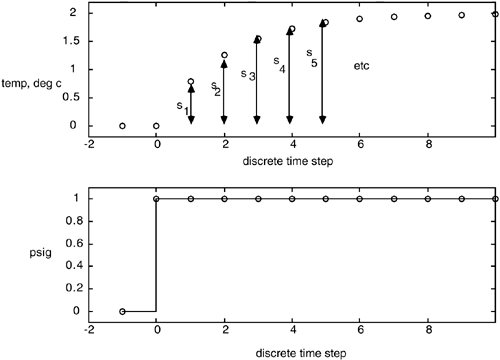
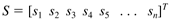
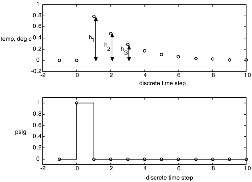
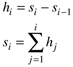
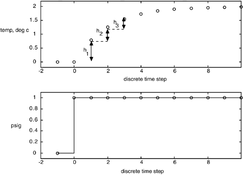

| [ Team LiB ] |
|
4.6 Discrete Step and Impulse Response ModelsThe common model predictive control techniques presented in Chapter 16 are based on step or impulse responses. Step Response ModelsFinite step response (FSR) models are obtained by making a unit step input change to a process operating at steady state. The model coefficients are simply the output values at each time step, as shown in Figure 4-9. Here, si represents the step response coefficient for the ith sample time after the unit step input change. If a nonunit step change is made, the output is scaled accordingly. Figure 4-9. Illustration of step response parameter identification. The step response model is the vector of step response coefficients,  where the model length n is long enough so that the coefficient values are relatively constant (i.e., the process is close to a new steady state). Impulse Response ModelsAnother common form of model is known as a finite impulse response (FIR). Here, a unit pulse is applied to the manipulated input, and the model coefficients are simply the values of the outputs at each time step after the pulse input is applied. As shown in Figure 4-10, hi represents the ith impulse response coefficient. Figure 4-10. Illustration of step response parameter identification. There is a direct relationship between step and impulse response models:  Figure 4-11 illustrates how impulse response coefficients can be obtained from step responses. The impulse response coefficients are simply the changes in the step response coefficient at each time step. Similarly, step response coefficients can be found from impulse responses; a step response coefficient is the sum of the impulse response coefficients to that point. Figure 4-11. Obtaining impulse response models from step response data. |
| [ Team LiB ] |
|